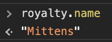
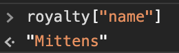

Allow me to explain the difference of HTML and CSS using an analogy.
Imagine cooking a delicious dish. HTML is like the actual components of the dish - what the ingredients are, their measurements, and the method of cooking. CSS is then how you are going to present the dish you've made in an appealing way. Chefs refer to this is "plating."
Control flow is just a fancy term that refers to the order on how a program reads and executes lines of codes. For Javascript, it is usually in sequence from left to right and top to bottom unless it encounters a code in which there are two or more ways to proceed. This happens when a block of code contains a control flow statement which provides the conditions that need to be met for it to choose the next code to execute.
One example of control flow statement is a loop. In a loop, the commands will be repeated over and over until a certain condition has been met.
A good way to understand this concept is if we apply this in a real life example.
Here we have a simple dessert recipe:
Cooking something according to a recipe is an example of a control flow since you have to do the steps in order. Otherwise you will not be able to make the dish properly.
In the above recipe, where you able to spot the loop statement? The statement "Stir until all the chocolate is melted" is a loop since you need to keep on stirring until the condition to stop was met - which is when all the chocolate have melted.
The DOM, or the Document Object Model of a web page is similar to a blueprint. It has a list of all the objects found in the web page and all of their properties (like what is the text font or background color).
However this blueprint is pretty special - it has magical properties! If you change something in the DOM, the webpage would change as well. You can even add things that were not on the webpage before!
An example of when you might interact the DOM is if you already have several paragraph elements on your web page and you wanted to assign a class to them. Using the DOM, you can just call all the paragraph elements and then assign a class to all of them instead of finding them one by one in the html and then assigning them a class one by one.
Below we've made a JS object called "royalty."
Note that each line corresponds to a property of that object. Also notice that each line follows the same format of property name : property value. For example, age is a property name and its value is 10.
To access the value of a property, we can use either of the following formats: object.propertyname or object["propertyname"]
 On the other hand, here’s an example of a JS array:
To access an item of the array, we just need to specify its order in the array. Since JS arrays use zer-based indexing, the first item in an array has an index of 0, the second time has an index of 1 and so forth.
Thus, running weekday[1] will return Tuesday.
A function is a block of code that performs a specific task. This is very useful especially when you are going to do the task several times in the webpage. You can just call the function instead of writing the code all over again.